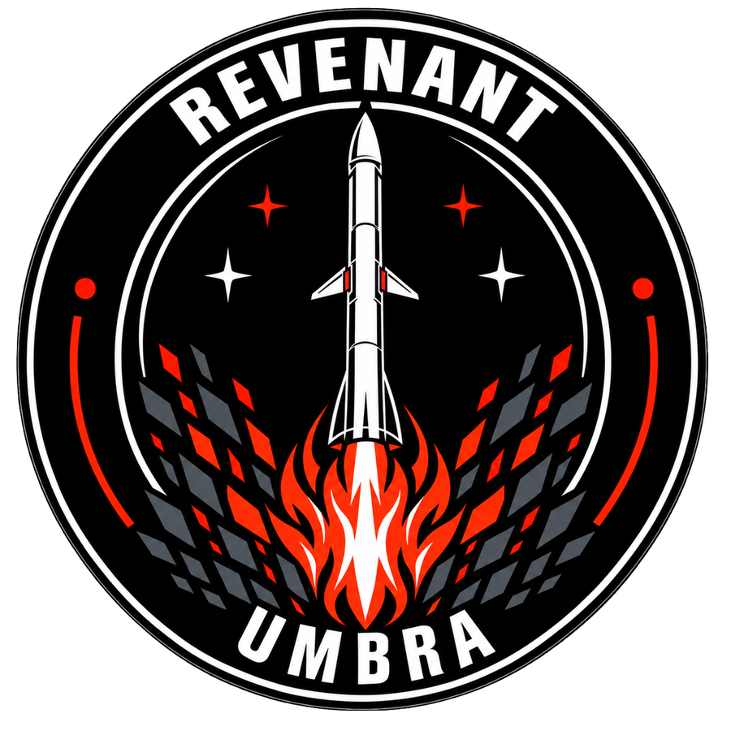
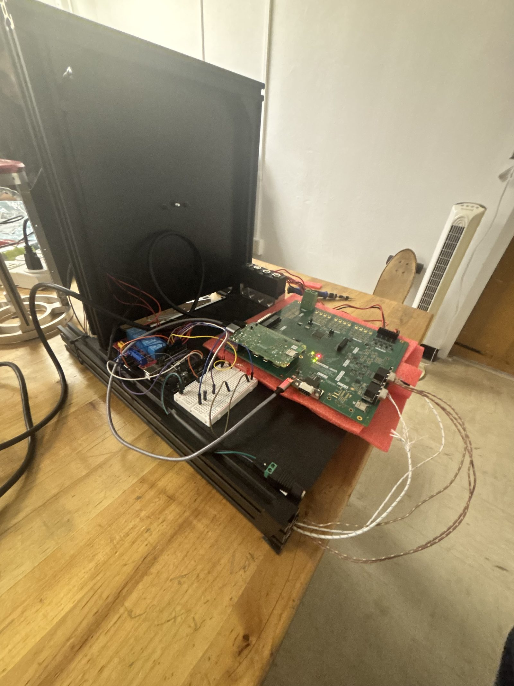
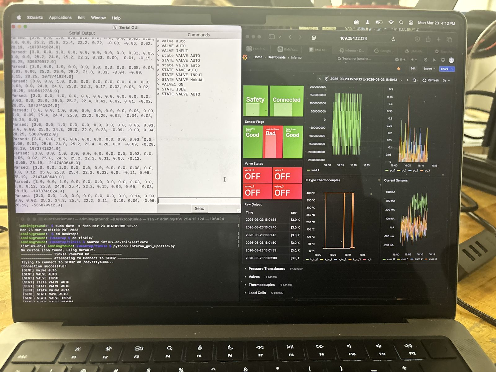
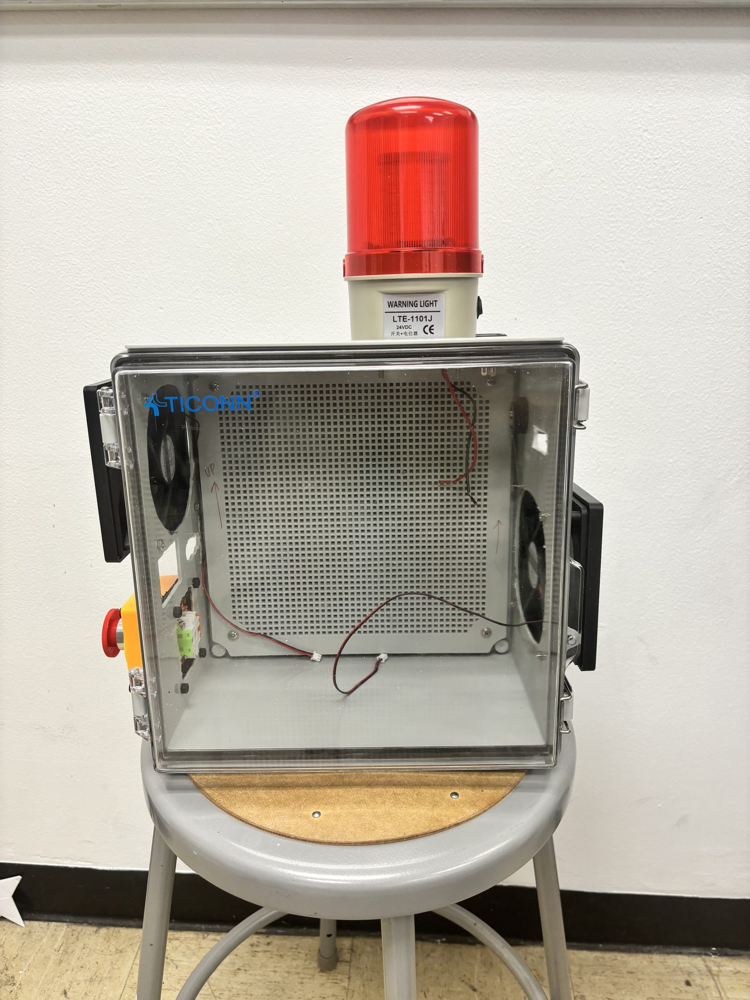
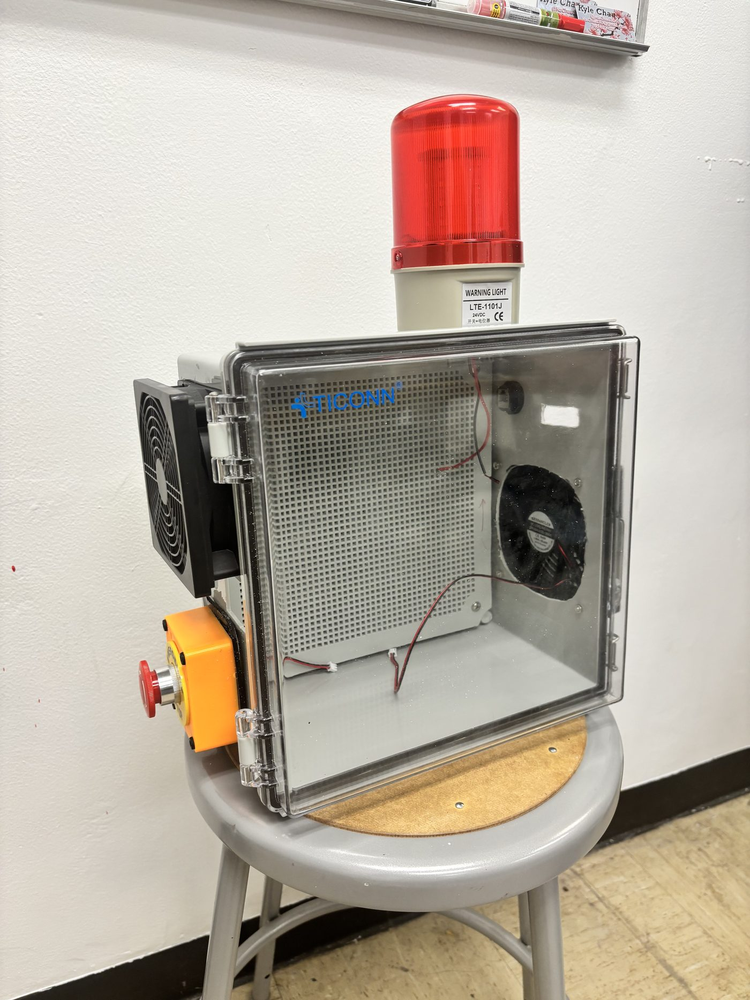
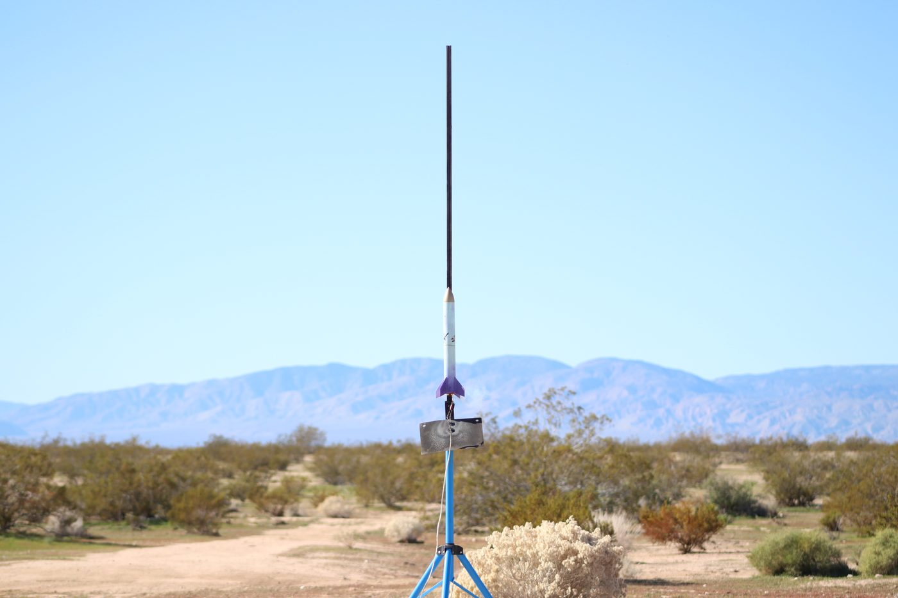
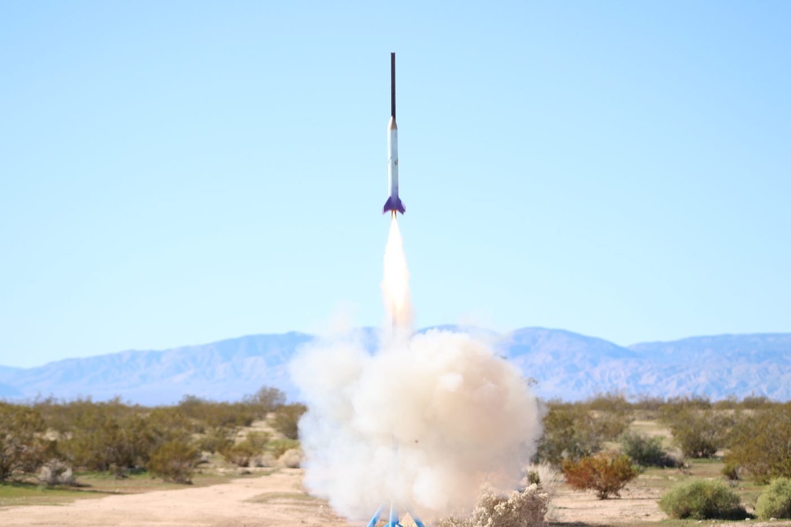

Project Revenant
Project Manager · UMBRA · Fall 2026 – present

Revenant is a high-power rocket built to fly itself. The goal is a 6-DOF guidance, navigation, and control system that holds attitude in real time using servo-actuated canards for closed-loop pitch, yaw, and roll — not a passively stable vehicle with control surfaces bolted on, but one where the canards are the stabilization system and the fins are only a passive floor.
I lead a 25-person engineering team across four subteams — Systems & Manufacturing, Avionics, Aerodynamics, and Mechanisms & Actuations — and own technical scope, budget, and schedule. Our target this semester is Critical Design Review.
What I'd point a reviewer at
The most useful thing I did on this project was distrust our own simulation. The OpenRocket model had been built with placeholder materials — cardboard and balsa — while the actual bill of materials called for Blue Tube, PA6-CF, and G10. Rebuilding the model with real densities (1,250, 1,090, and 1,850 kg/m³ respectively) showed the vehicle was aerodynamically unstable off the rail. The design had been wrong the whole time; the model had just been flattering it.
The fix was deliberately minimal. It would have been easy to solve the instability by enlarging the fins, but that would have quietly turned Revenant into a conventional rocket with decorative canards and defeated the entire point of the project. We corrected just enough to clear the rail safely and preserved the control architecture.
- Simulation
- OpenRocket driven headless through its Java API via JPype, with real BOM material properties
- Control
- Raspberry Pi Pico, custom Python control software
- Structure
- Blue Tube airframe, PA6-CF printed components, G10 fins
- Propulsion
- AeroTech I59WN-P
- Test
- Ground testing on the assembled vehicle rather than a separate rig
Project Inferno — Liquid Engine Test DAQ
Simulation & Software Engineer · UMBRA Electronics · Spring 2026 – present
Inferno is the data acquisition and control system for UMBRA's liquid rocket engine test stand: a four-layer board built around an STM32H7 and a Raspberry Pi Compute Module, reading K-type thermocouples, load cells, pressure transducers, and current sensors while driving opto-isolated solenoid valves over Ethernet from a safe distance.

My contribution
I wrote the firmware that turns the board into instrumentation and the software that makes it legible to an operator. On the STM32H7 side that meant sensor drivers and the acquisition loop — MCP9600 thermocouple front ends, HX711 load cell amplifiers, ADC channels, pressure transducer scaling, current averaging, valve indexing, and an automatic valve sequence for timed test operations.
On the ground side I built a multithreaded Python application that reads and parses the STM32 telemetry stream over serial, accepts operator commands back to the board, logs everything to timestamped CSV, and writes into InfluxDB so the whole test appears live on a Grafana dashboard. Reading and writing run on separate threads behind a queue so that a slow database write can never stall the serial link during a test.

I also simulated the valve driver circuit in LTspice to characterize actuation behavior and timing before it drove real hardware, designed and printed the adapters that mate the DAQ to the stand's instrumentation, and spent a fair amount of time on the unglamorous half of the job — chasing down connectivity faults, including the SSH link between the ground station and the stand.


- Firmware
- C on STM32H7 (HAL), sensor drivers and acquisition loop
- Ground software
- Python, threading, pySerial, InfluxDB client, Tkinter, Grafana
- Instrumentation
- K-type thermocouples, load cells, pressure transducers, current sense, solenoid valves
- Analysis
- LTspice valve driver simulation
- Mechanical
- Fusion 360 / SolidWorks, FDM printed adapters
Project Exo Bronco — Two-Stage Flight Avionics
Avionics Systems Liaison · UMBRA Electronics · Spring 2026 – present
Exo Bronco is a two-stage high-power rocket. Both stages fly a custom avionics board running CircuitPython, carrying a high-G accelerometer, a 9-DOF IMU, a barometric sensor, GPS, LoRa telemetry, and four pyro channels with continuity monitoring, logging the whole flight to CSV while it happens.
The telemetry link
My most substantive work here was on the radio. A two-stage vehicle has two flight computers transmitting at once, at very different ranges, and the link configuration has to reflect that rather than being left at defaults. I set the LoRa signal bandwidth explicitly to 125 kHz and assigned each stage its own frequency and spreading factor — the booster at 432 MHz and SF8, where the flight is short and close; the sustainer at 434 MHz and SF11, trading data rate for the link margin it needs at altitude. Separating the stages in frequency keeps them from stepping on each other, and matching spreading factor to range is what makes the sustainer's packets actually arrive.
Alongside that I implement and test embedded code on the custom boards, do board-level soldering and modifications, and coordinate between the subteams that own different pieces of the vehicle — which in practice means being the person who notices when the avionics assumption and the mechanical assumption have quietly diverged.
- Platform
- CircuitPython on a custom ESP32-S3 based flight board
- Sensing
- ADXL375 high-G accelerometer, BNO055 9-DOF IMU, MS8607 barometric sensor, GPS
- Telemetry
- RFM9x LoRa, per-stage frequency and spreading factor plan
- Recovery
- Four pyro channels with continuity checking, altitude-triggered main deployment
Delerium v2 — L1 Certification Rocket
Personal project · scratch build
A 54 mm scratch-built high-power rocket for NAR Level 1 certification, flying an AeroTech I600R and simulating to roughly Mach 1.2–1.3. Blue Tube 2.0 airframe, PA6-CF fins printed in-house and fiberglass-wrapped as a structural mitigation, dual-deploy recovery with motor ejection for the drogue and a separate black powder charge for the main.
The avionics bay is an Eggtimer Quasar GPS and dual-deploy altimeter that I assembled from the kit and then repaired at the component level — replacing a failed 0.1 µF 1206 ceramic capacitor and clearing an EEPROM boot fault by reflowing the offending joints. I did similar work on the EggFinder LCD ground receiver, tracking a fault down to a heat-damaged 3.3 V regulator and replacing it.
The part of this project I'd actually defend in a design review is the model audit. Going back through the OpenRocket file with a critical eye turned up a shock cord modeled at 43 cm where it needs to be 1.5–2 m, the wrong cord material entirely (elastic instead of Kevlar or tubular nylon), structural components still modeled as balsa, and deployment events happening at up to ~111 m/s in several simulation cases. Any one of those is how a rocket comes apart at apogee. Finding them on the ground is the whole job.
Small Rocket Competition
Multidisciplinary team · Fall 2025
Designed, prototyped, and launched a G-class rocket to 2,457 ft apogee, placing 2nd overall. I led integration of the avionics and structural subsystems and designed the recovery system, which deployed successfully post-flight. This was the project that got me into UMBRA.


Leadership
Beyond running Revenant, I sit on UMBRA's Executive Board as the Underclassmen Representative and as the association's delegate to the Engineering Student Council. The first role means being the path into real hardware work for students who don't yet know how to ask for it — I'm the link between project managers who need people and underclassmen who want in but haven't found the door. The second means representing UMBRA at the college level on funding and bylaws, and carrying those changes back to the teams they affect.
I joined UMBRA in fall 2025 through the Small Rocket Competition, spent spring 2026 on flight code and data acquisition across several UMBRA Electronics projects, and now focus on developing complex flight systems.
Tools
Design & analysis
SolidWorks, Fusion 360, OpenRocket, LTspice, KiCad, MATLAB
Software
Python, CircuitPython, embedded C (STM32 HAL), Arduino, InfluxDB, Grafana
Hands-on
SMT rework and board-level repair, FDM printing in PA6-CF, composites layup, harness fabrication, bench instrumentation
Engineering practice
Simulation validation against real material properties, BOM and cost control, scope and schedule management, design reviews
Get in touch
I'm looking for aerospace internships where I can work on avionics, GNC, or test systems. The fastest way to reach me is email.